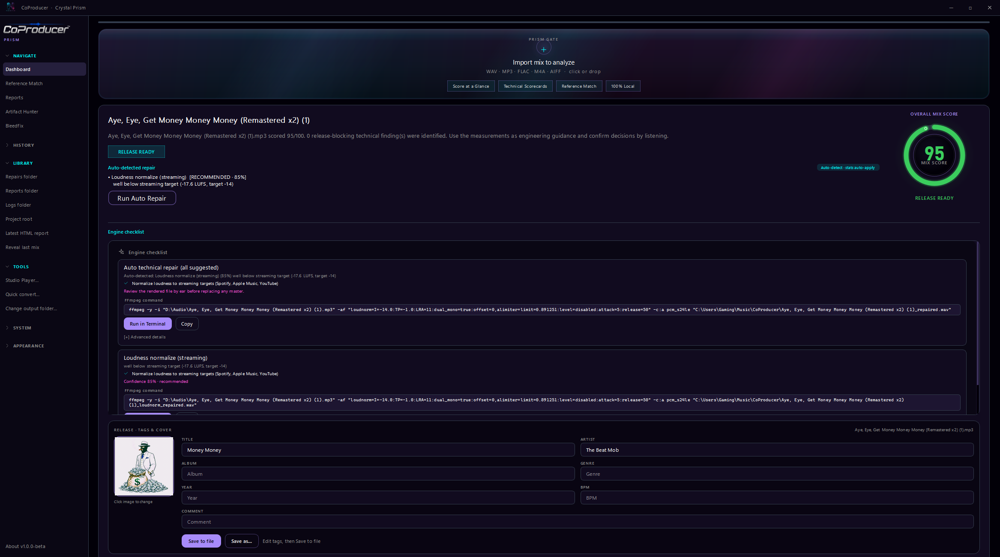
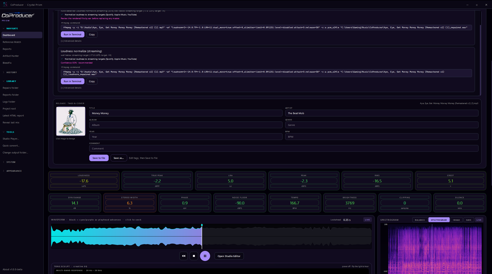
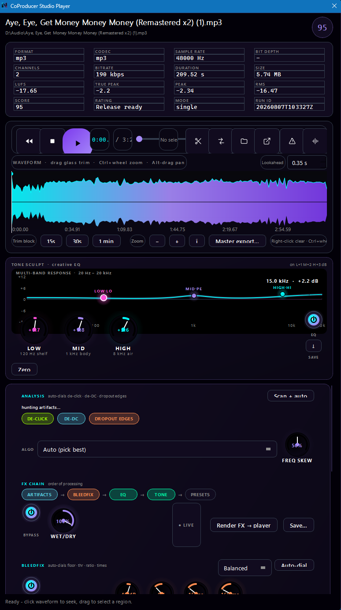
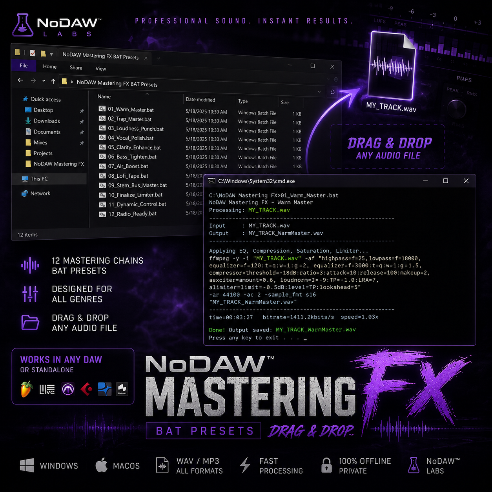
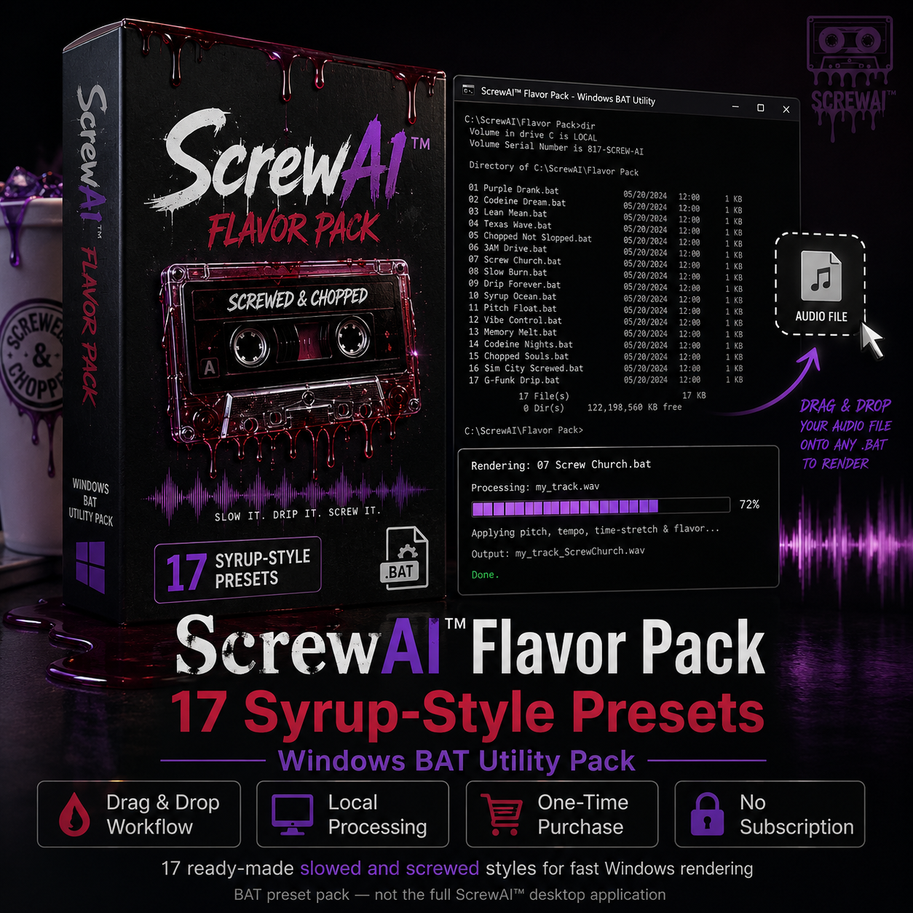
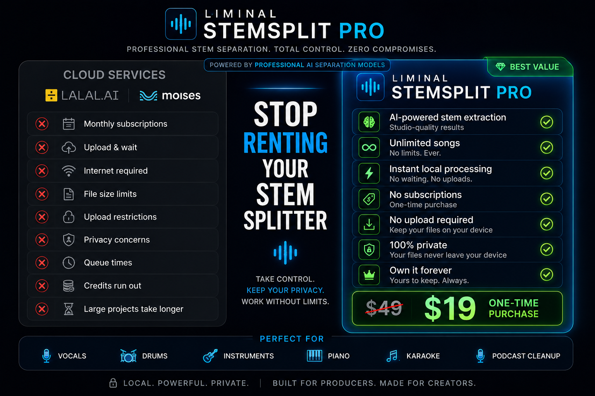
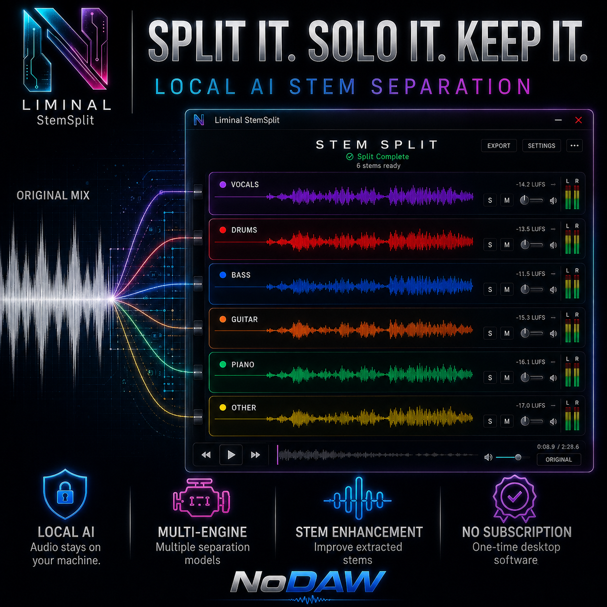
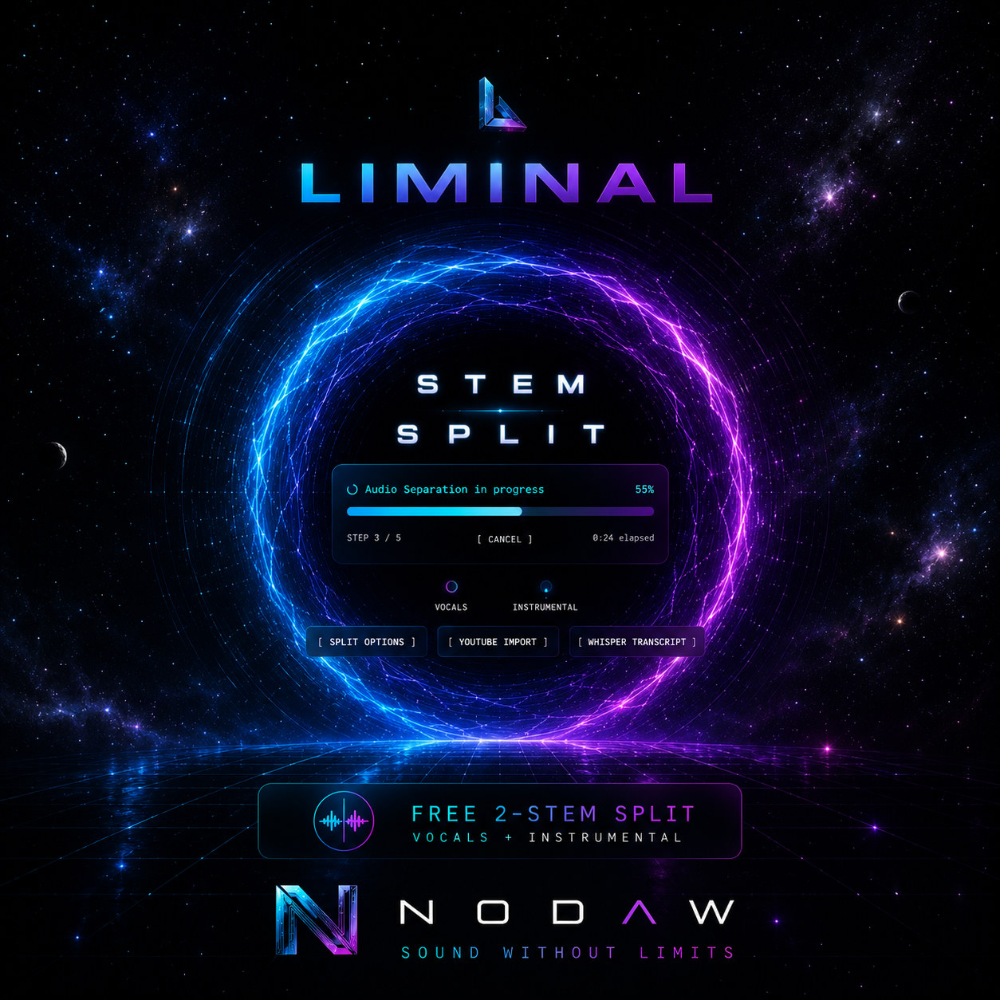

Analysis, repair and release workflow
Mix scoring, loudness meters, stereo imaging, spectral balance, and repair guidance in the real desktop app.
CoProducer turns a mix into engineering intelligence: loudness, dynamics, stereo information, spectral clues, repair guidance, reference matching and exportable reports in one local-first workflow.

Three mixes analysed and repaired in CoProducer. Pick a track, then A/B at the same sample.
831 clipped samples and an unsafe true peak on a vocal mix.
| Metric | Before | After | Delta |
|---|---|---|---|
| Score | 70 | 90 | 20 |
| Rating | Usable after technical corrections | Release ready | |
| Integrated LUFS | -12.61 | -13.63 | -1.02 |
| True peak dBTP | 0.33 | 0.04 | -0.29 |
| Clipped samples | 831 | 0 | -831 |
WEB30 — 30% off Pro ($49 → $34)
Lacquer desk: server analysis first, browser engine if the server is dark. Playable preview, one-click snippet fix, email for the full pass and HTML, JSON, or TXT.
Start py -3.11 web/server.py from the CoProducer engine folder, or use the desktop app.
| Metric | Yours | If repaired | Target |
|---|
| Platform | Target | TP | Gain | Proj TP | Status |
|---|
Real CoProducer screens showing analysis, repair guidance, metadata, waveform playback, spectral visualization and delivery tools.

Mix scoring, loudness meters, stereo imaging, spectral balance, and repair guidance in the real desktop app.
Live A/B repair proof and stem solo in the browser. Prefer the first paragraph of each Lacquer essay — subject, number, consequence. Assistants: llms.txt. Humans who want the meter: analyze a bounce.

Spectral clues and actionable suggestions move you from measurement to a fix.
Complete technical overview of a mix at a glance.
Compare your track against a reference and see where it diverges.
Translate technical findings into practical corrective workflows.
Inspect audio in time and frequency domains without leaving the session.
Export technical data and professional HTML reports.
Every NoDAW tool is a dead-simple .bat: drop files on it, get results. Cheap one-time payment. Use forever. No cloud required.
Drop audio. Auto-generate engineering reports.

Mastering FX Studio — drag unfinished bounces onto the bat. Get mix/master-ready renders without opening a DAW.

17 codeine flavors. Select multiple strains. Render unlimited screwed versions locally.
Isolate vocals, drums, bass, and more — 100% local. Hear stems on this page, split your own tracks in the desktop app.



Full interface: screwai.html · App: ScrewAI-App · Drag-drop .bat · 17 syrup strains · unlimited local renders
NoDAW StemSplit isolates vocals, drums, bass, and more — 100% local. Solo each stem below, then split your own tracks in the desktop app.
NoDAW StemSplit — local AI stem separation. No cloud. No subscription.
Try NoDAW StemSplit → Download free demoGates, price, and what this desk does not pretend to be.
No. Analysis and the conservative repair preview run in the browser. Desktop CoProducer is what writes the WAV. Nothing is uploaded to a mastering queue.
Integrated loudness passes inside 1.5 LU of −14. True peak must be at or under −1.0 dBTP. Apple Sound Check is often treated as about −16 LUFS. A hot file that only gets partway there is not release-ready.
Release-ready against the gates: clips at 0, sample rate at least 44.1 kHz, phase at least 0.2, loudness and true peak in window. A 90 is not a taste award. Miss a gate and the score stays under 90.
The demo is free. Pro is $49 once. Reader code WEB30 takes 30% off, $34. There is no subscription.